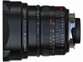

器材
党
全部器材
产品年表
名词百科
榜单
器材库
> 35mm画幅MF定焦镜头 > Summilux-M 21/1.4 ASPH.

徕卡
Summilux-M 21/1.4 ASPH.
4.92
综合评分
分类
35mm画幅MF定焦镜头
点评
0 条
图片
0 张
评测
0 篇
Summilux-M 21/1.4 ASPH. 是首款使用最大光圈为f/1.4的21mm镜头（35mm规格）。
产品类型
35mm画幅MF定焦镜头
综合评分
4.92分
无忌评测
暂无评测
规格参数
网友点评
(0)
产品图 / 样片
(0)
评测文章
(0)
详细规格
镜头类型
超广角镜头
发布日期
2008-09-15
厂家推荐价格
50,000.00 （人民币）
焦距
21.6mm
最大光圈
f/1.4
最小光圈
f/16
视角（对角）
[对角/水平/垂直] 92°/81°/59
镜头结构
10片/8组
非球面镜片
2片
最近对焦距离
70cm
最大放大倍率
0.034倍
镜头卡口
Leica M
防抖
否
颜色
黑色
尺寸
69.5×66mm
重量
580g
该产品暂无存档的网友点评
该产品暂无存档的产品图
评测 / 相关文章
该产品暂无存档的评测文章
相关文章
［资讯］广角新篇章徕卡SUMMILUX M 21/1.4
（原站已下线）
［资讯］徕卡Summilux 21/1.4 ASPH
（原站已下线）
［资讯］徕卡M 21/1.4和M 24/1.4
（原站已下线）